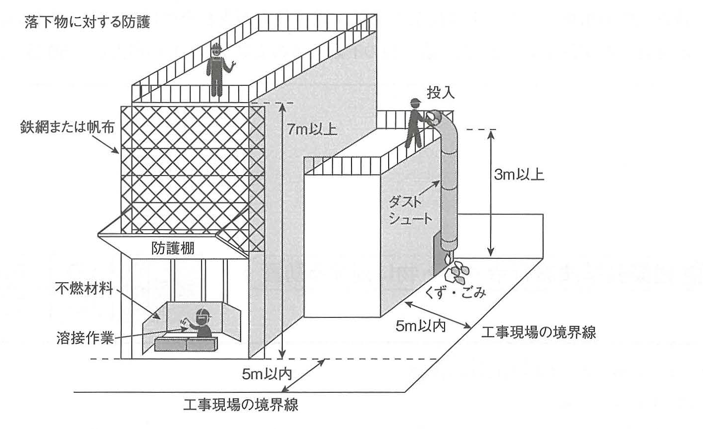

原文
次の1.から3.の各法文において、□に当てはまる正しい語句又は数値を、下の該当する枠内から1つ選びなさい。
- 建設業法（特定建設業者の下請代金の支払期日等）
- 建築基準法施行令（落下物に対する防護）
- 労働安全衛生法（元方事業者の講ずべき措置等）
次の1.から3.の各法文において、□に当てはまる正しい語句又は数値を、下の該当する枠内から1つ選びなさい。
Trong mỗi điều luật từ 1 đến 3 dưới đây, hãy chọn một từ hoặc trị số đúng thích hợp điền vào ô trống từ khung lựa chọn tương ứng phía dưới.
| 法文 | 空欄 | 正解 | 正しい語句又は数値 |
|---|---|---|---|
| 法文1 | ① | ① | 注文者 |
| 法文1 | ② | ④ | 50日 |
| 法文2 | ③ | ③ | 5m |
| 法文2 | ④ | ⑤ | 7m |
| 法文3 | ⑤ | ③ | 危険 |
| 法文3 | ⑥ | ② | 技術 |
特定建設業者が ① 注文者 となった下請契約（下請契約における請負人が特定建設業者又は資本金額が政令で定める金額以上の法人であるものを除く。以下この条において同じ。）における下請代金の支払期日は、第24条の4第2項の申出の日（同項ただし書の場合にあっては、その一定の日。以下この条において同じ。）から起算して ② 50日を経過する日以前において、かつ、できる限り短い期間内において定められなければならない。
2 （略）
3 （略）
4 （略）
① 注文者 / 発注者 / 依頼者 / 事業者 / 受注者
② 20 / 30 / 40 / 50 / 60
Đối với hợp đồng thầu phụ mà doanh nghiệp xây dựng loại đặc định là bên đặt hàng（注文者）, ngoại trừ trường hợp bên nhận thầu trong hợp đồng thầu phụ là doanh nghiệp xây dựng loại đặc định hoặc là pháp nhân có mức vốn từ mức quy định bằng nghị định trở lên, thì thời hạn thanh toán tiền thầu phụ phải được ấn định:
Khoản 2 đến khoản 4: lược bỏ.
① Bên đặt hàng（注文者） / Bên phát đơn đặt hàng, chủ đầu tư（発注者） / Bên yêu cầu（依頼者） / Doanh nghiệp（事業者） / Bên nhận đơn, nhận thầu（受注者）
② 20 / 30 / 40 / 50 / 60 ngày.
① 元請負人は、下請負人からその請け負った建設工事が完成した旨の通知を受けたときは、当該通知を受けた日から 20日以内で、かつ、できる限り短い期間内に、その完成を確認するための検査を完了しなければならない。
② 元請負人は、上記①の検査によって建設工事の完成を確認した後、下請負人が申し出たときは、直ちに、当該建設工事の目的物の引渡しを受ける。ただし、下請契約において定められた工事完成の時期から 20日を経過した日以前の一定の日に引渡しを受ける旨の特約がされている場合には、この限りでない。
① Khi nhà thầu chính（元請負人）nhận được thông báo của nhà thầu phụ rằng công trình mà nhà thầu phụ nhận thực hiện đã hoàn thành, nhà thầu chính phải hoàn tất việc kiểm tra để xác nhận hoàn thành trong vòng 20 ngày kể từ ngày nhận thông báo, đồng thời trong khoảng thời gian ngắn nhất có thể.
② Sau khi xác nhận công trình đã hoàn thành thông qua kiểm tra nêu trên, nếu nhà thầu phụ đề nghị thì nhà thầu chính phải nhận bàn giao ngay lập tức đối tượng của công trình đó. Tuy nhiên, quy định này không áp dụng nếu trong hợp đồng thầu phụ có thỏa thuận đặc biệt quy định việc bàn giao vào một ngày nhất định không muộn hơn ngày đủ 20 ngày kể từ thời điểm hoàn thành công trình.
① 特定建設業者が注文者となった下請契約における下請代金の支払期日は、前項②の「下請負人が申し出たとき」（特約がされている場合は上記（第24条の4）②の「一定の日」）から起算して 50日を経過する日以前において、かつ、できる限り短い期間内において定められなければならない。
② 特定建設業者が注文者となった下請契約において、下請代金の支払期日が定められなかったときは、上記（第24条の4）②の「下請負人が申し出たとき」または「一定の日」が、上記①の規定に違反して下請代金の支払期日が定められたときは、上記（第24条の4）②の「下請負人が申し出たとき」または「一定の日」から起算して 50日を経過する日が、下請代金の支払期日として定められたものとみなす。
③ 特定建設業者は、当該特定建設業者が注文者となった下請契約に係る下請代金の支払につき、当該下請代金の支払期日までに、一般の金融機関による割引を受けることが困難であると認められる手形（支払期日が遠すぎる手形など）を交付してはならない。
④ 特定建設業者は、当該特定建設業者が注文者となった下請契約に係る下請代金を、上記①または上記②の規定により定められた支払期日までに支払わなければならない。特定建設業者がその支払をしなかったときは、下請負人に対して、上記（第24条の4）②の「下請負人が申し出たとき」または「一定の日」から起算して 50日を経過した日から当該下請代金の支払をする日までの期間について、その日数に応じて、当該未払金額に国土交通省令で定める率を乗じて得た金額を、遅延利息として支払わなければならない。
関係法令では、一部の法文について、法文そのものを掲載するよりも読みやすさを優先するため、漢字・ひらがなの使用方法や、句読点の位置等を変更し、いくつかの補足説明を加えています。
① Đối với hợp đồng thầu phụ mà doanh nghiệp xây dựng loại đặc định là bên đặt hàng, thời hạn thanh toán tiền thầu phụ được tính từ thời điểm nhà thầu phụ đề nghị bàn giao, hoặc từ “ngày nhất định” nếu có thỏa thuận đặc biệt, và phải được xác định không muộn hơn ngày đủ 50 ngày, đồng thời trong khoảng thời gian ngắn nhất có thể.
② Nếu không quy định thời hạn thanh toán tiền thầu phụ, thì ngày nhà thầu phụ đề nghị bàn giao hoặc ngày nhất định nói trên được coi là thời hạn thanh toán. Nếu thời hạn thanh toán được quy định nhưng vi phạm giới hạn nêu trên, thì ngày đủ 50 ngày kể từ thời điểm tương ứng được coi là thời hạn thanh toán theo luật.
③ Doanh nghiệp xây dựng loại đặc định không được giao cho nhà thầu phụ loại hối phiếu（手形）mà đến ngày đến hạn thanh toán tiền thầu phụ vẫn khó có thể chiết khấu tại một tổ chức tài chính thông thường, chẳng hạn hối phiếu có kỳ hạn thanh toán quá xa.
④ Doanh nghiệp xây dựng loại đặc định phải thanh toán chậm nhất vào thời hạn thanh toán được xác định. Nếu không thanh toán đúng hạn, doanh nghiệp phải trả cho nhà thầu phụ lãi chậm trả（遅延利息）. Khoảng thời gian tính lãi bắt đầu từ ngày đã đủ 50 ngày, tính từ ngày nhà thầu phụ đề nghị bàn giao hoặc từ “ngày nhất định”, cho đến ngày thực tế thanh toán. Tiền lãi chậm trả được tính bằng cách lấy số tiền chưa thanh toán nhân với tỷ lệ do pháp lệnh của Bộ Đất đai, Hạ tầng, Giao thông và Du lịch quy định, tương ứng với số ngày chậm trả.
Đối với một số điều luật liên quan, tài liệu ưu tiên tính dễ đọc nên có thay đổi cách sử dụng kanji/hiragana, vị trí dấu câu và bổ sung một số giải thích, thay vì đăng nguyên văn tuyệt đối của điều luật.
建設業法に関する出題において、問われることの多い期日には、次のようなものがある。
Đối với các câu hỏi về Luật Kinh doanh Xây dựng, các thời hạn thường được hỏi gồm:
建築工事等を行なう場合において、建築のための工事をする部分が工事現場の境界線から水平距離が 5m以内で、かつ、地盤面から高さが 7m以上にあるとき、その他はつり、除却、外壁の修繕等に伴う落下物によって工事現場の周辺に危害を生ずるおそれがあるときは、国土交通大臣の定める基準に従って、工事現場の周囲その他危害防止上必要な部分を鉄網又は帆布でおおう等落下物による危害を防止するための措置を講じなければならない。
③ 3 / 4 / 5 / 6 / 7
④ 3 / 4 / 5 / 6 / 7
Khi tiến hành công tác xây dựng, nếu phần công trình đang thi công nằm trong phạm vi có khoảng cách theo phương ngang từ đường ranh giới công trường 5 m trở xuống và có độ cao tính từ mặt đất 7 m trở lên, hoặc khi có nguy cơ vật rơi phát sinh do các công tác như đục phá（はつり）, tháo dỡ（除却）, sửa chữa tường ngoài gây nguy hại cho khu vực xung quanh công trường, thì phải thực hiện các biện pháp phòng chống nguy hại do vật rơi, chẳng hạn che phủ bằng lưới thép（鉄網）hoặc bạt vải（帆布） tại các phần cần thiết.
③ 3 / 4 / 5 / 6 / 7 m
④ 3 / 4 / 5 / 6 / 7 m
① 建築工事等において、工事現場の境界線からの水平距離が 5m以内で、かつ、地盤面からの高さが 3m以上の場所から、くず・ごみ・その他飛散するおそれのある物を投下する場合においては、ダストシュートを用いるなど、当該くず・ごみ等が工事現場の周辺に飛散することを防止するための措置を講じなければならない。
② 建築工事等を行う場合において、建築のための工事をする部分が、工事現場の境界線からの水平距離が 5m以内で、かつ、地盤面から高さが 7m以上にあるときや、はつり・除却・外壁の修繕等に伴う落下物によって工事現場の周辺に危害を生じるおそれがあるときは、国土交通大臣の定める基準に従って、工事現場の周囲・その他危害防止上必要な部分を、鉄網又は帆布で覆うなど、落下物による危害を防止するための措置を講じなければならない。
① Khi ném xuống mảnh vụn, rác hoặc các vật khác có nguy cơ văng phát tán từ vị trí có khoảng cách theo phương ngang từ ranh giới công trường 5 m trở xuống và độ cao từ mặt đất 3 m trở lên, phải sử dụng ống đổ phế thải（ダストシュート）hoặc thực hiện biện pháp tương đương để ngăn phế thải, rác v.v. phát tán ra khu vực xung quanh công trường.
② Khi phần công trình đang thi công có khoảng cách theo phương ngang từ ranh giới công trường 5 m trở xuống và độ cao từ mặt đất 7 m trở lên, hoặc khi có nguy cơ vật rơi từ đục phá, tháo dỡ, sửa chữa tường ngoài v.v. gây nguy hại cho khu vực xung quanh, phải che các phần cần thiết bằng lưới thép hoặc bạt vải và thực hiện biện pháp phòng chống nguy hại do vật rơi.
| Tình huống | Khoảng cách tới ranh giới | Độ cao | Biện pháp điển hình |
|---|---|---|---|
| Ném くず・ごみ | 5 m以内 | 3 m以上 | ダストシュート |
| 落下物による危害 | 5 m以内 | 7 m以上 | 鉄網・帆布 |
Hình trên Book page 610 còn minh họa 防護棚, tức mái/sàn che bảo vệ phía trên khu vực làm việc bên dưới, cùng các nhãn 不燃材料, 溶接作業, 投入, ダストシュート và くず・ごみ.

建設業に属する事業の元方事業者は、土砂等が崩壊するおそれのある場所、機械等が転倒するおそれのある場所その他の厚生労働省令で定める場所において関係請負人の労働者が当該事業の仕事の作業を行うときは、当該関係請負人が講ずべき当該場所に係る危険を防止するための措置が適正に講ぜられるように、技術上の指導その他の必要な措置を講じなければならない。
⑤ 破損 / 損壊 / 危険 / 労働災害 / 事故
⑥ 教育 / 技術 / 施工 / 作業 / 安全
Trong ngành xây dựng, tại nơi có nguy cơ đất cát sụp đổ, máy móc lật đổ hoặc các địa điểm khác do pháp lệnh quy định, khi người lao động của nhà thầu liên quan thực hiện công việc, đơn vị thầu chính（元方事業者） phải bảo đảm rằng các biện pháp nhằm phòng ngừa nguy hiểm（危険） tại địa điểm đó được thực hiện thích hợp. Để đạt mục đích này, đơn vị thầu chính phải thực hiện hướng dẫn về mặt kỹ thuật（技術上の指導） và các biện pháp cần thiết khác.
⑤ Hư hỏng（破損） / Hư hại, phá hỏng（損壊） / Nguy hiểm（危険） / Tai nạn lao động（労働災害） / Sự cố, tai nạn（事故）
⑥ Giáo dục（教育） / Kỹ thuật（技術） / Thi công（施工） / Công việc（作業） / An toàn（安全）
| 日本語 | 読み方 | Tiếng Việt | Giải thích | Liên quan |
|---|---|---|---|---|
| 特定建設業者 | とくていけんせつぎょうしゃ | Doanh nghiệp xây dựng loại đặc định | Doanh nghiệp có giấy phép 特定建設業 theo 建設業法. | 下請代金・支払期日 |
| 下請契約 | したうけけいやく | Hợp đồng thầu phụ | Hợp đồng giao một phần công việc xây dựng cho nhà thầu cấp dưới. | 元請負人・下請負人 |
| 下請代金 | したうけだいきん | Tiền thầu phụ | Khoản tiền phải thanh toán cho nhà thầu phụ. | 支払期日 |
| 支払期日 | しはらいきじつ | Thời hạn/ngày đến hạn thanh toán | Mốc thời gian pháp luật yêu cầu xác định việc thanh toán. | 20日・50日 |
| 元請負人 | もとうけおいにん | Nhà thầu chính | Chủ thể ký hợp đồng trực tiếp phía trên nhà thầu phụ. | 下請負人 |
| 下請負人 | したうけおいにん | Nhà thầu phụ | Chủ thể nhận phần công việc từ nhà thầu chính. | 元請負人 |
| 検査 | けんさ | Kiểm tra | Kiểm tra xác nhận công việc thầu phụ đã hoàn thành. | 完成通知 |
| 引渡し | ひきわたし | Bàn giao | Chuyển giao đối tượng công trình sau khi hoàn thành. | 特約 |
| 特約 | とくやく | Thỏa thuận đặc biệt | Điều khoản riêng được các bên quy định trong hợp đồng. | 引渡し |
| 手形 | てがた | Hối phiếu/kỳ phiếu thanh toán | Chứng từ thanh toán có kỳ hạn. | 割引 |
| 割引 | わりびき | Chiết khấu hối phiếu | Chuyển nhượng hối phiếu cho tổ chức tài chính trước ngày đáo hạn để nhận tiền. | 手形 |
| 遅延利息 | ちえんりそく | Lãi chậm trả | Khoản lãi phát sinh khi không thanh toán đúng thời hạn luật định. | 未払金額 |
| 未払金額 | みはらいきんがく | Số tiền chưa thanh toán | Cơ sở để tính lãi chậm trả. | 遅延利息 |
| 出来形 | できがた | Khối lượng/phần công việc đã hoàn thành | Phần công việc đã thi công được xác nhận tại một thời điểm. | 下請代金 |
| 完成通知 | かんせいつうち | Thông báo hoàn thành | Mốc bắt đầu thời hạn 20 ngày để kiểm tra. | 検査 |
| 落下物 | らっかぶつ | Vật rơi | Vật liệu, mảnh vụn hoặc cấu kiện có thể rơi từ trên cao. | 防護 |
| 防護 | ぼうご | Phòng hộ, bảo vệ | Biện pháp ngăn nguy hại đối với người và khu vực xung quanh. | 鉄網・帆布 |
| はつり | はつり | Đục phá | Đục, phá bê tông hoặc vật liệu xây dựng. | 落下物 |
| 除却 | じょきゃく | Tháo dỡ, loại bỏ | Phá bỏ hoặc tháo bỏ bộ phận/công trình. | 落下物 |
| 鉄網 | てつもう | Lưới thép | Dùng để ngăn vật rơi hoặc vật văng. | 帆布 |
| 帆布 | はんぷ | Bạt vải | Vật liệu che chắn để phòng vật rơi, vật văng. | 鉄網 |
| ダストシュート | ダストシュート | Ống đổ phế thải | Ống dẫn phế thải từ vị trí cao xuống phía dưới, hạn chế vật văng. | くず・ごみ |
| 防護棚 | ぼうごだな | Mái/sàn che bảo vệ | Kết cấu che chắn để bảo vệ khu vực bên dưới khỏi vật rơi. | 落下物 |
| 不燃材料 | ふねんざいりょう | Vật liệu không cháy | Trong hình dùng cho phần bảo vệ khu vực có công tác hàn. | 溶接作業 |
| 元方事業者 | もとかたじぎょうしゃ | Đơn vị thầu chính | Thuật ngữ pháp lý trong 労働安全衛生法, chỉ đơn vị đứng ở vị trí đầu mối trong chuỗi công việc. | 関係請負人 |
| 関係請負人 | かんけいうけおいにん | Nhà thầu liên quan | Nhà thầu thực hiện một phần công việc dưới cơ cấu của 元方事業者. | 元方事業者 |
| 危険 | きけん | Nguy hiểm | Đáp án chính xác của ô ⑤. | 防止措置 |
| 技術上の指導 | ぎじゅつじょうのしどう | Hướng dẫn về mặt kỹ thuật | Đáp án của ô ⑥ kết hợp với 上の指導. | 元方事業者 |
Đây là bảng tổng hợp được sách trực tiếp đưa ra.
| Tình huống | Ranh giới | Độ cao | Biện pháp |
|---|---|---|---|
| Ném くず・ごみ | 5 m以内 | 3 m以上 | ダストシュート |
| 落下物による危害 | 5 m以内 | 7 m以上 | 鉄網・帆布 |
Ném rác: 5-3. Vật rơi từ công trình: 5-7.
| {{HEADER_1}} | {{HEADER_2}} |
|---|---|
| {{ROW_KEY}} | {{ROW_RELATION}} |
{{NOTE_CONTENT}}
{{WARNING_CONTENT}}
{{MEMORY_ITEM}}